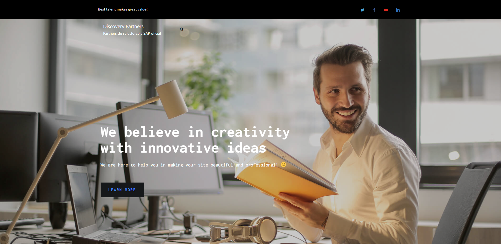

Discovery Partners
Website & Architecture
Project Overview
A complete website development project for Discovery Partners, creating their first digital presence with optimized service pages, navigation architecture, and conversion-focused design to drive leads in a competitive market.
Client:
Discovery Partners
Duration:
3 months
Role:
Web Developer & UX Strategist

Project Journey
Challenge
Discovery Partners didn't have a digital presence and needed a website built from scratch to attract traffic, showcase services, and generate leads in a competitive market.
Strategy
Design a website optimized for service visibility and user experience, with a structure aligned to customer journeys:
- Competitor Benchmarking & Keyword Research – identified high-value service keywords and analyzed competitors' positioning.
- Technical Foundation – built clean site architecture, sitemap, and internal links for efficient navigation.
- Content Optimization – created service content with clear meta descriptions, headings, and UX-driven layouts.
- Conversion Flows – developed dedicated landing pages and funnels for each service to maximize lead capture.
Execution
- Built a modern, user-friendly website from the ground up.
- Optimized technical elements (sitemap, metadata, internal links, load performance).
- Designed landing pages for each service with tailored copy, visuals, and UX/UI principles to guide users to conversion.
- Implemented funnels aligned with the decision-making process to increase leads.
Results
- Established Discovery Partners' first presence online with service-based landing pages positioned for core keywords.
- Improved user experience through structured navigation and intuitive layouts.
- Positioned the company for scalable growth with a strong digital foundation.
Important note: The website has been edited by the client after delivery, so the current live version does not fully reflect the original design and strategy I developed.
Skills Implemented
Web Development
Site Architecture
Keyword Research
UX/UI Design
Conversion Optimization
Content Strategy